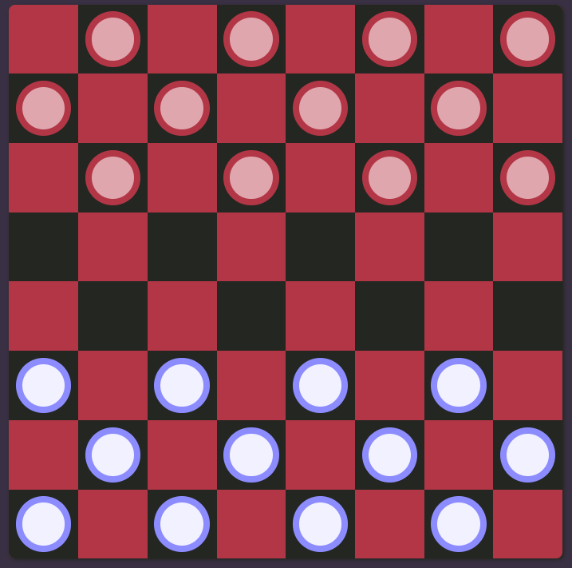

Quick Rundown on Chess
Checkers is a board game played between two people on an 8x8 checked board like the one shown below. Each player has 12 pieces that are like flat round disks that fit inside each of the boxes on the board. The pieces are placed on every other dark square and then staggered by rows, like shown on the board.

Typically the darker color pieces moves first. Each player takes their turn by moving a piece. Pieces are always moved diagonally and can be moved in the following ways:
- Diagonally in the forward direction (towards the opponent) to the next dark square.
- If there is one of the opponent's pieces next to a piece and an empty space on the other side, you jump your opponent and remove their piece. You can do multiple jumps if they are lined up in the forward direction. *** note: if you have a jump, you have no choice but to take it.
The last row is called the king row. If you get a piece across the board to the opponent's king row, that piece becomes a king. Another piece is placed onto that piece so it is now two pieces high. King pieces can move in both directions, forward and backward.
Once a piece is kinged, the player must wait until the next turn to jump out of the king row.
You win the game when the opponent has no more pieces or can't move (even if he/she still has pieces). If neither player can move then it is a draw or a tie.
- Sacrifice 1 piece for 2: you can sometimes bait or force the opponent to take one of your pieces enabling you to then take 2 of their pieces.
- Pieces on the sides are valuable because they can't be jumped.
- Don't bunch all your pieces in the middle or you may not be able to move, and then you will lose.
- Try to keep your pieces on the back row or king row for as long as possible, to keep the other player from gaining a king.
- Plan ahead and try to look at every possible move before you take your turn.
- Practice: if you play a lot against a lot of different players, you will get better.
- The game of checkers is called "draughts" in many countries.
- It comes from an old game called Alquerque.
- Chess can be played on the same game board as checkers.
- The game Chinese Checkers has very little to with Checkers and was invented by the Germans, not the Chinese.
- In 1535 the rule that you had to jump when presented with a jump opportunity was added to the game.
- There are lots of different variants of checkers including a version that is played on a 10x10 board with 20 pieces per player.